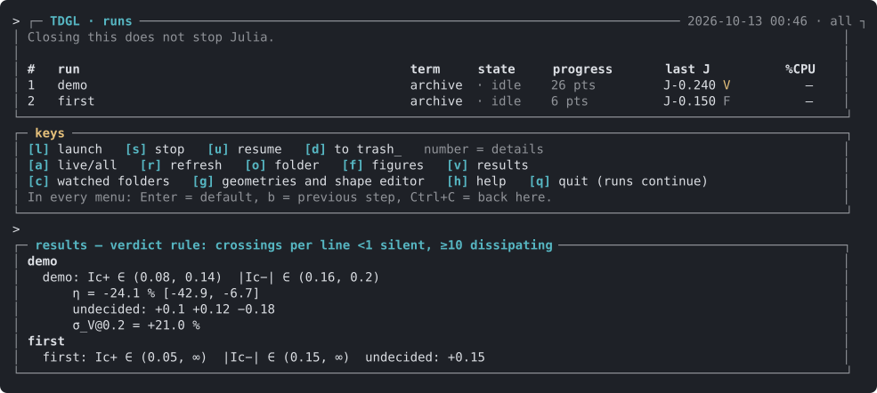

Getting started
Install Julia, run one example, read what it wrote.
Install
Julia 1.13 or later (julialang.org, or juliaup). Each release is its own Julia
project; the first command installs its packages. Python 3 with NumPy and matplotlib draws the figures; a browser opens the shape
editor and the 3D viewer.
git clone https://github.com/georgeotjg/juliaTDGL.git && cd juliaTDGL
julia --project=tdgl2 -e 'using Pkg; Pkg.instantiate()' # release 2.0
julia --project=julia -e 'using Pkg; Pkg.instantiate()' # release 1.2 (the menu and the editor live here)The two releases are the same package (TDGL) in two projects; they are not loaded together.
A first run
A run is one TOML file. The examples in tdgl2/examples/ cover every option; the notched two-band box at κ = 25 takes
minutes on one core:
OPENBLAS_NUM_THREADS=1 julia --project=tdgl2 tdgl2/scripts/run.jl tdgl2/examples/wedge_k25.tomlOne BLAS thread per process is the right setting: the step is limited by memory bandwidth, so a campaign runs one single-threaded
process per physical core. --polarity + and --polarity - run the two directions as two processes into the
same folder.
A run file has a few tables:
[material] file = "mgb2_model_II.toml" # or the bands inline
kappa = 2.0
[mesh] nx = 40, ny = 24, nz = 6, dx = 0.5, buf = 1
[geometry] GEOM_MODE = "WEDGE" # a catalogue shape, or CUSTOM with a shape file
[scheme] # the step: all defaults are the production scheme
[protocol] t_min_GL = 400.0, t_min_GL_res = 1584.0
[run] J = [0.0, 0.3, 0.4, 0.5], H = 0.03, out_dir = "runs/my_first"Every key, with its default: Reference.
What a run writes
output/rungs_J+.csv,rungs_J-.csv: one row per current, with the voltage, the vortex crossings per measuring line, the verdict, and the amplitudes and currents of each band.output/summary.json: the brackets of each onset and of η, the scheme as resolved (step, stages, integrator per band, the solver tolerance), the units, the code version and commit, and the numbers that place the model in its regime.restart/: a checkpoint per closed point. A stopped run resumes from it and gives the same bits as one that never stopped.run.tomland the shape file: the folder alone rebuilds the run.
julia --project=tdgl2 tdgl2/scripts/figures.jl RUNDIR draws the standard figures of the run and a one-page
REPORT.md (see Tools).
The terminal menu
julia julia/scripts/tdgl_tui.jlIt lists the runs of both releases with their progress. It launches a run of release 2.0 from a run file (key n; two
CPUs run the two polarities in parallel) and stops it cleanly after the current point (s). It resumes it to the bit
(u), opens the shape editor (g) and shows the films of a run (w).

From Julia
using TDGL
md = two_band(xi_ratio=4.0, κ=2.0, gamma_kwt=10.0) # two bands, KWT on both
gr = Grid(40, 24, 6; dx=0.5)
mk = build_masks(GeomSpec(GEOM_MODE="WEDGE"), gr)
st = Stepper(md, gr, mk) # the production scheme
L = ladder(st, initial_state(md, gr, mk, 0.03), [0.0, 0.5, 0.7, 0.74]; H=0.03,
pr=Protocol(t_confirm_GL=3000.0, stop_after_V=1))
delay_bracket(L)Where to go next
- The model: what the equations are, term by term.
- The protocol: how a current point is judged silent or dissipating, and how an onset is bracketed.
- Examples: one run file per option.
- The guides: release 2.0 (14 pages) and release 1.2.